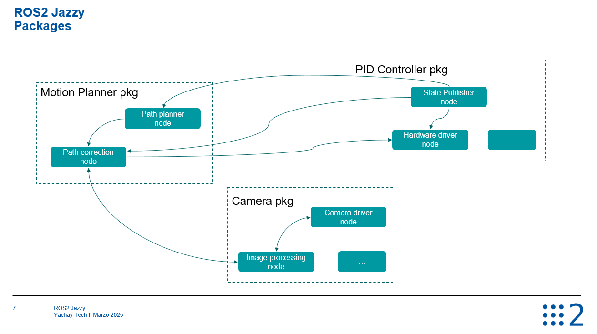

En esta clase aprenderás qué es un nodo en ROS 2, cuál es su rol dentro de una aplicación robótica, y cómo se relaciona con los paquetes y otros nodos a través de un ejemplo práctico.
📝 Documentación
📘 Notas de la
clase
1. ¿Qué es un nodo en ROS
2?
Un nodo es
un subprograma dentro de tu aplicación en ROS 2, escrito típicamente en Python o C++. Cada nodo debe tener una
única responsabilidad.
Una aplicación puede tener muchos paquetes y nodos.
Los nodos se agrupan dentro de paquetes.
Los nodos se comunican entre sí utilizando mecanismos de comunicación como topics, services, parameters, entre otros.
2. Ejemplo práctico:
Arquitectura de una aplicación robótica
Imagina una aplicación
con tres paquetes y múltiples nodos:

📦 Paquete: camera_pkg
driver_node: Captura imágenes desde una cámara.
image_processing_node: Procesa las imágenes capturadas.
📦 Paquete: motion_planning_pkg
motion_planner_node: Calcula trayectorias para el robot.
path_correction_node: Ajusta las trayectorias en base al entorno.
📦 Paquete: hardware_control_pkg
motor_driver_node: Envía comandos a los motores del robot.
state_publisher_node: Publica el estado del hardware.
3. Comunicación entre nodos
El image_processing_node envía información del entorno al path_correction_node.
El path_correction_node comunica cambios al motion_planner_node.
El motion_planner_node envía trayectorias al motor_driver_node.
El state_publisher_node publica el estado, que puede ser usado por otros nodos.
Esta arquitectura modular permite que cada nodo cumpla una función específica y se comunique con los demás, formando una red de nodos (o grafo).
4. Características y beneficios de los nodos
✅ Separación de responsabilidades
Cada nodo tiene una sola tarea clara, lo cual mejora la legibilidad y mantenimiento del código.
✅ Escalabilidad
Separar tu aplicación en nodos y paquetes facilita su crecimiento y modularidad.
✅ Tolerancia a fallos
Si un nodo falla, los otros nodos pueden seguir funcionando si están en procesos separados.
✅ Independencia del lenguaje
Puedes mezclar nodos en distintos lenguajes (Python y C++), y seguir comunicándose correctamente.
✅ Paralelismo natural
Al ejecutarse como procesos separados, los nodos permiten ejecución concurrente.
5. Buenas prácticas
Usa nombres únicos para tus nodos.
Si necesitas ejecutar múltiples instancias del mismo nodo, usa distintos nombres o
namespaces.
6. Comparación con POO (Programación Orientada a Objetos)
Así como una clase tiene una única responsabilidad, un nodo también debe hacer una sola cosa.
7. Próximos pasos
Veremos cómo crear un nodo en Python y C++.
Aprenderás a ejecutarlo y comunicarlo con otros nodos usando herramientas de línea de comandos.